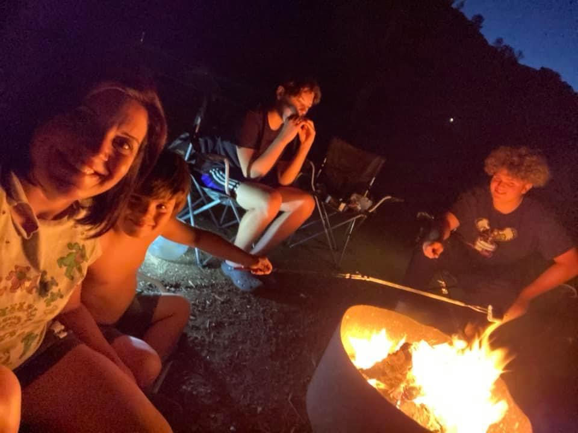
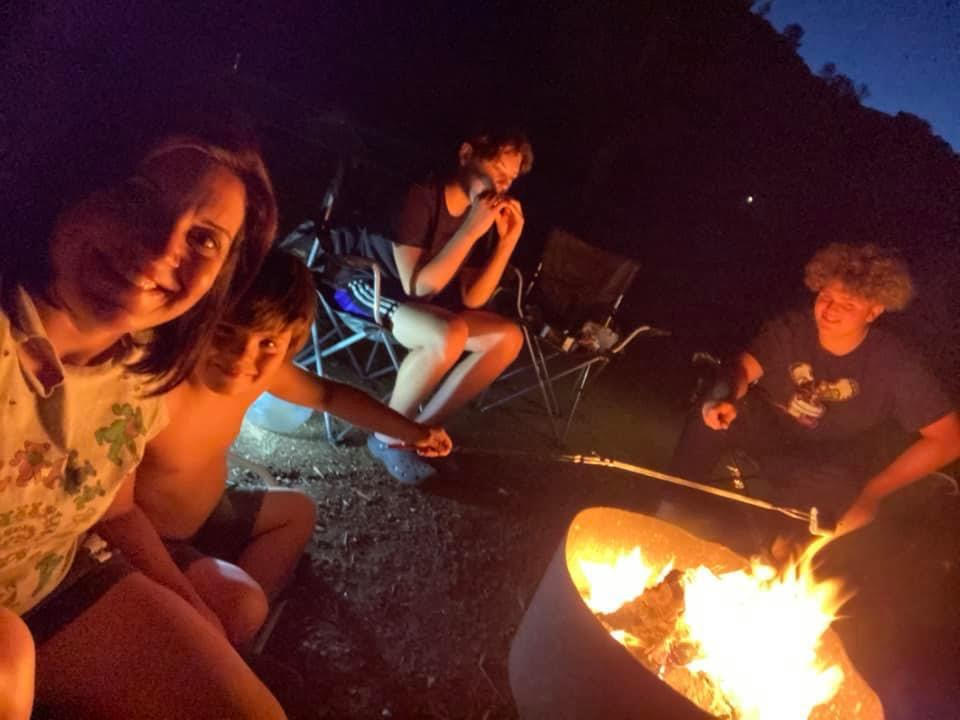

I LOVE being a boy mom
It's no secret that most boys are active, loud, rambunctious, and are prone to roughhouse. Before losing your temper, we have the tips to keep you sane while parenting boys. The Best Thing About Raising a Boy. After having two boys, I’ve learned to accept the fact that this life will be crazy…and…awesome…and a bit more crazy. Raising boys can be an incredible experience and one thing that I’ve learned is that boys absolutely love their mama! My boys adore me and that is the best feeling ever. Of course, the fact that they love their mom isn’t the only great thing about raising a boy. You get to teach them how to behave like men so we get a new generation of men ready for the world. No drama! They fight, then punch each other and then they’re the best of friends. They don’t have attitude or have high pitched screams! Getting flowers from the yard! They pick every one and bring it to me like it’s their job! If we have to pee, we pee. No hunting for bathrooms. (At least while they’re still little). Pockets always full of “treasures” lol! How rambunctious they are, the funny things they say.. the adventures. How everything has some type of lava, sharks or monsters. Mom always comes first. But MOST importantly, that momma will always be their #1 girl!


You are ENOUGH
Tell your children — all of them — that they are enough. Make it clear that you are the parent, and they are the kids. That is the rule, no exceptions. That means that you make the decisions on important matters, and you will protect them in times of trouble. Point out the other loving adults in your lives — especially the men. Uncles, neighbors, grandparents, friends, teachers, coaches. Express gratitude for the wide net of love, care and support that benefits your whole family. Be cognizant of chores you assign. Girls can take out stinky garbage, wield power tools and clean gutters just as well as boys. And boys can learn to hem jeans, bake pastries and babysit younger siblings just as well as girls. Take on “male” chores around the house. If you're not inclined to mow, repair, build, make it a family project to learn. Home Depot and community colleges offer courses on basic car repair, electrical and pluming and woodworking. Advocate for equally shared parenting in your relationship, and all relationships. When parenting is shared equally in separated families, fathers are far less likely to drop out of their kids' lives. Even if 50-50 parenting is not at play in your family now, push for it. Work on your co-parenting arrangement and skills. If that is not possible, support lawmakers and advocates who fight for shared parenting time, and encourage people you know to equally split physical custody with their child's other parent. Call out anyone who tries to “You're the man of the house” your son, right there in front of your son. Even when a well intentioned person says such nonsense, reply with: “He is a child and I am the adult. We don't say that in our house.” And that's the end of that. Because you're the adult.


If happiness is the goal - and it should be, then adventures should be the priority
The boys and I are constantly going on adventures. From beach days, river/lake days, camping, trips to the snow or just a good old hike or bike ride. We always find time to get out and explore. After all together is our favorite place to be. Here are some great ideas for adventure seeking and memory making. 1. Go fishing. Grab a pole, and hit the local pond. It's a quiet sport that'll keep you present and in the moment.2 Pack a picnic and find some open green space. 3. Play a board game or a card game. 4. Start a journal. There are plenty of diaries and journals for girls, but boys need a place to write down their thoughts too. Encourage him by writing in it with him. 5. Schedule some tech-free playtime. Being absolutely present with your kid, even for 20 minutes, is one of the most valuable ways to bond.6. Run a race. Whether it’s a 5k or a 1-mile fun run, train with your son and show him what moms (and women) can do! 7. Attend a rally for a cause you care about. It's important to teach your son how to be a good citizen. 8. Bake something. Not a seasoned baker yourself? Try a box cake that make you look like a cake boss, even when you’re not.9. Read with him. Especially books that show strong female role-models 10. Have a good cry. Boys are often encouraged to hide their feelings and "man up." Letting your son know it's okay to have emotions will set him up to be a more empathetic adult.11. Go surfing. Spend an afternoon catching waves with your kid. Don’t live near the beach? Make it a vacation, and book an AirBNB that is perfect for families! 12. Plan a future vacay for just the two of you. 13. Put on a puppet show together. It's fun to be someone else for a while.


 
Click here to check out our favorite campgroud, Lake Berrryessa.

Click here to check out our favorite campgroud, Lake Berrryessa.